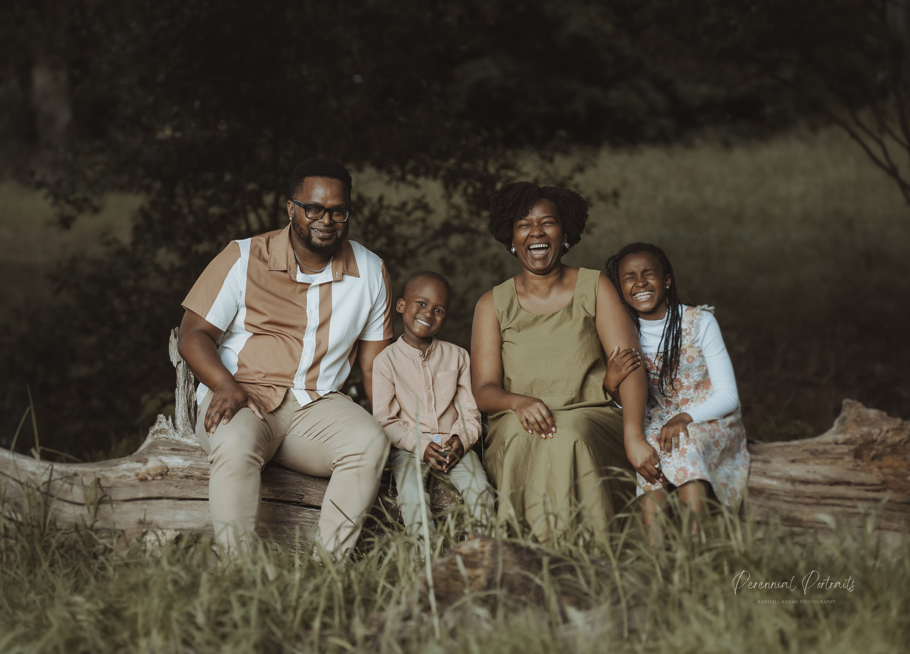
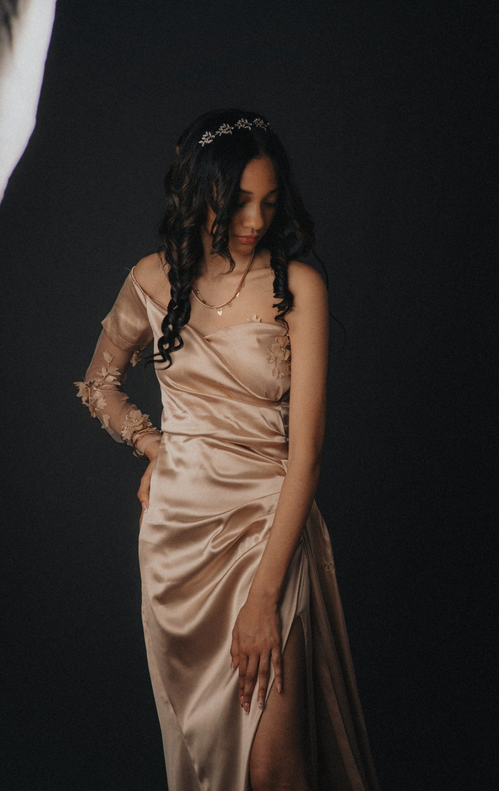
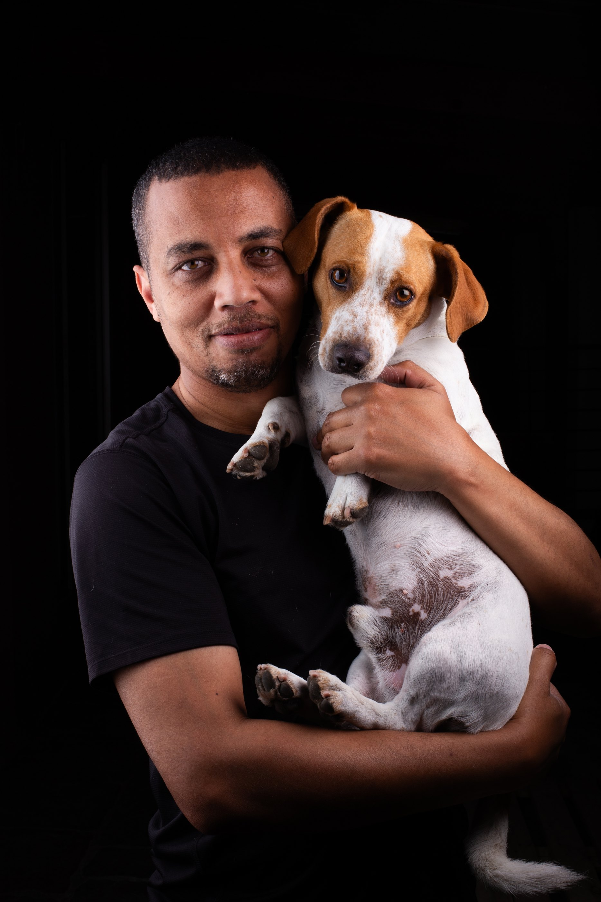

“Mr Randall made my matric ball photos absolutely beautiful! Such a lovely person, amazing talent and unforgettable experience. Highly recommend booking with him!”
Matric ball photography

A SIMPLE BELIEF
Not just a photograph.
A piece of your life, kept.
I believe photographs become more valuable with time. My approach is considered and personal: good light, honest connection, and images that still mean something years from now.
EXPLORE MY WORK

THE STUDIO SIGNATURE
Classic, considered portraits, created with care and intention.
At Perennial Portraits, I believe a photograph should be more than something to scroll past. It should be something you can hold, frame, return to, and one day pass down.
Through thoughtful lighting, simple backdrops and a relaxed, personal approach, I create studio portraits that reveal something of the person in front of my camera. From individuals and couples to families, every session is an opportunity to make something worth keeping.
Enquire about a portrait session ↗
BEHIND THE CAMERA
I’m Randall Adams, the photographer behind Randall Adams Photography and Perennial Portraits.
My approach is simple: to create photographs that go beyond the moment. I’m drawn to genuine connection, quiet expressions, the character in a face and the stories people carry.
Whether I’m photographing a family outdoors or creating a considered studio portrait, I want every image to feel personal, honest and worth keeping.
Explore my work ↗KIND WORDS FROM CLIENTS
Every session is personal. These are a few words shared by the people who have trusted me to photograph their stories.
“Mr Randall made my matric ball photos absolutely beautiful! Such a lovely person, amazing talent and unforgettable experience. Highly recommend booking with him!”
Matric ball photography
“As the winner of the competition, our family shoot was nothing but amazing. Randall had patience with the kids, the atmosphere was welcoming and the way he speaks about his work makes you just want to take pictures whole day. Thank you for capturing beautiful moments that we as the Michaels family will treasure for a life. May your business grow from strength to strength.”
Family photography
“The passion he has for his artwork is stunning. Love all the pics. Keep up the good work. May God continue to bless him.”
Client recommendation
“Randall is an incredible photographer. He is patient, and he works from a real vision rather than a Pinterest board. Instead of copying poses you have seen online, he captures the true feeling and atmosphere of the moment, and you can see it in every photograph. He has a very specific style, and if you let him follow it, the results are amazing. Trust his process and you will end up with photographs that feel like you and are worth keeping for years. Highly recommended.”
Client review
LET’S MAKE SOMETHING LAST
Portraits · Families · Personal milestones
Start an enquiry ↗Enquiries are welcome by email. I’ll be in touch as soon as possible.“He hath made every thing beautiful in his time.”
ECCLESIASTES 3:11 KJV